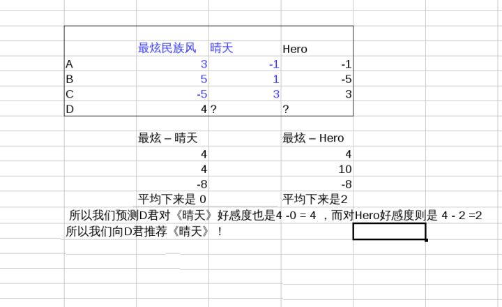
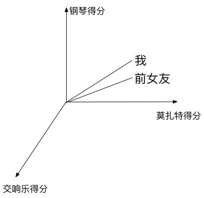

|
|
☰ 目录
20180828基于内容的和基于物的协同过滤相似的人会喜欢同一首歌， 楼下惊现前男友。 作者：邰原朗 链接：https://www.zhihu.com/question/26743347/answer/34235147 来源：知乎 著作权归作者所有。商业转载请联系作者获得授权，非商业转载请注明出处。 这就是amazon发明的“喜欢这个商品的人，也喜欢某某”算法。 其核心是数学中的“多维空间中两个向量夹角的余弦公式”，当初我的确是被这算法惊艳到了。 “商品推荐”系统的算法( Collaborative filtering )分两大类， 第一类，以人为本，先找到与你相似的人，然后看看他们买了什么你没有买的东西。这类算法最经典的实现就是“多维空间中两个向量夹角的余弦公式”； 第二类, 以物为本直接建立各商品之间的相似度关系矩阵。这类算法中最经典是'斜率=1' (Slope One)。amazon发明了暴力简化的第二类算法，‘买了这个商品的人，也买了xxx’。 以人为本（余弦推荐）我们先来看看第一类，最大的问题如何判断并量化两人的相似性，思路是这样 -- 例子： 有3首歌放在那里，《最炫民族风》，《晴天》，《Hero》。 A君，收藏了《最炫民族风》，而遇到《晴天》，《Hero》则总是跳过； B君，经常单曲循环《最炫民族风》，《晴天》会播放完，《Hero》则拉黑了 C君，拉黑了《最炫民族风》，而《晴天》《Hero》都收藏了。 我们都看出来了，A,B二位品味接近，C和他们很不一样。 那么问题来了，说A，B相似，到底有多相似，如何量化？ 我们把三首歌想象成三维空间的三个维度，《最炫民族风》是x轴，《晴天》是y轴，《Hero》是z轴，对每首歌的喜欢程度即该维度上的坐标， 并且对喜欢程度做量化(比如： 单曲循环=5, 分享=4, 收藏=3, 主动播放=2 , 听完=1, 跳过=-1 , 拉黑=-5 )。 那么每个人的总体口味就是一个向量，A君是 (3,-1,-1)，B君是(5,1,-5)，C君是(-5,3,3)。 (抱歉我不会画立体图) 我们可以用向量夹角的余弦值来表示两个向量的相似程度， 0度角(表示两人完全一致)的余弦是1， 180%角(表示两人截然相反)的余弦是-1。 根据余弦公式, 夹角余弦 = 向量点积/ (向量长度的叉积) = ( x1x2 + y1y2 + z1z2) / ( 跟号(x1平方+y1平方+z1平方 ) x 跟号(x2平方+y2平方+z2平方 ) ) 可见 A君B君夹角的余弦是0.81 ， A君C君夹角的余弦是 -0.97 ，公式诚不欺我也。 以上是三维(三首歌)的情况，如法炮制N维N首歌的情况都是一样的。 假设我们选取一百首种子歌曲，算出了各君之间的相似值，那么当我们发现A君还喜欢听的《小苹果》B君居然没听过，相信大家都知道该怎么和B君推荐了吧。 第一类以人为本推荐算法的好处我想已经很清楚了，那就是精准！ 代价是运算量很大，而且对于新来的人(听得少，动作少)，也不太好使， 所以人们又发明了第二类算法。 以物为本（相似度关联矩阵）假设我们对新来的D君，只知道她喜欢最炫民族风，那么问题来了，给她推荐啥好咯？  使用公式描述如下： $$y1 - x1 = b1$$ $$y2 - x2 = b2$$ $$y3 - x3 = b3$$ 那么，$y4 - x4? = ?$ , 做一个近似， 假设求出 $ \overline{b} = \frac{b1+b2+b3}{3}$ , 那么对 $x4$ 的喜好程度为： $x4 = y4 - \overline{b}$ . 如图，推荐《晴天》！ 呵呵，第二类算法的好处大家也看出来了，简单粗暴好操作(也适合map-reduce)，可精度差了点。 所以，各家网站真正的推荐算法，是他们在综合上述两类算法的基础上，各自研制并且不断地改进调节的，外人不得而知！ ^_^ 云音乐加tags“这个只能说是理论基础。歌曲不考虑热门冷门，同时不考虑用户数和歌曲数计算复杂度的话第一一天内离线数据计算不完的（当然网易云音乐用户量小全量暴力计算当我没说），实际应用起来复杂很多了。现在的推荐系统并不存在一种算法通吃，除了算法上的问题，还需要考虑基础数据的影响因素，比如两张歌单有多少歌曲重合，歌单的质量是怎么样的。” 我上一帖也说了， '向量夹角余弦' 解决的是‘量化顾客口味相似度’的问题(是最经典的解法，也有别的解法)， 不是有了它就能轻易实现第一类算法的，难处在后面咯。 我不是干‘CF/算法/数据挖掘/互联网’的，只是几年前偶尔瞄到过这方面文章被惊艳了一下， 见到这题就随口抖了个机灵，然后被评论区几位带板凳来的朋友给推上来了 ^_^ 既然大家都这么有兴趣，我在来抛块砖，说说‘有了理论基础之后咋整’的思(nao3)考(dong4)。
继续第一类算法的话题，目标“每日歌曲推荐”(其实题主感兴趣的是这个吧，旁边‘根据你喜欢的xxx推荐的yyy歌单’我觉得不咋样)。
首先就是如何定维度。 假设就用tag做为维度，那么第二个难处在于，维度上的'刻度'必须有正有负才好使， 用户没有机会直接表达对tag的好恶(不能收藏，播放，跳过一个tag)，如何定刻度呢。 我认为每一首歌背后是有其所属tags这个属性的，这个属性在UI上看不到很可能是因为比较容易引起口水。 歌往往隶属于很多歌单，而那些歌单都是有tags的，根据那些歌单的播放数、收藏数、分享数可以决定其'权威性'， 取'权威性'高的歌单的tag，就可以得到每首歌的tag属性。 然后用户在表达对一首首歌的好恶的时候，其实就不知不觉地影响了他在相应维度上的刻度。 假设维度和刻度都这样解决，那么我们可以对每个用户做出‘口味向量’了，接下来的难处是， 啥时候算/如何保存‘用户相似性’？ 所有用户两两算一下相似性，存为一个NxN的矩阵，这种事情不是闹这玩的。 其实到了这一步，不考虑‘以人为本’，直接根据我喜欢的tag，从各tag里挑一些人气高的，或者蹿升快的歌来推荐也算是能交差了。 不过那样的话，就容易同质化，也就不易让用户‘惊艳’了。 让我们继续沿着第一类算法的思路琢磨琢磨。 多维度空间还有一大好处是，有‘象限’这种的概念， 比如我们可以粗暴地假设，和我同一个象限的人，就是和我‘相似’的人， 如果因为维度太多，或者初期用户太少等原因找不到同像限的人， 还可以去‘相邻’的像限找嘛。 OK，假设我们根据tag以及自己的像限，找到了一批和自己‘气味相投’的人。 再丛这批人中，选几个‘和我夹角余弦’最大(再综合一下个人名声比如星标，粉丝数，和我的互动度等，更好)的人， 从他们听过而我没听过的歌中，再选一批 他们喜欢，或者他们新听到，新收藏，或者总人气高的等等， 就可以说是“根据我的口味生成”的“每日歌曲推荐”了。 以上内容，均是臆测，如果雷同，纯属巧合 。  可以这样看，找到自己在各个类别上的向量矩阵 —》 找到与自己相似的人 —》 找到相似人的歌单 ——》 选取一些人气高的，但是我又没听过的 ——> 推荐 推荐音乐中的一些其他问题1- 一个完整的推荐系统通常包括以下三部分的协作：
2- 前面的两种方法都是基于相似度的： 第一种余弦推荐（Content Filter, CF） , 需要用户的行为数据； 第二种相似度关联矩阵，需要歌曲的元数据， 比如旋律， tags 等； 3- 做一个简单的过滤， 同一个人如周杰伦的，可以粗暴的推荐周杰伦的其它歌， 但这样就容易形成了单曲循环； 做一个多样化过滤， 限制来自同一个歌手的数量，把后面的歌手给推上来； 4- 假设最近陈奕迅发新专辑了， 假设周杰伦的粉丝团都点进去了。 本来周杰伦的歌和陈奕迅的歌不是那么相关联， 但这样就造成了一个恶性循环。 可在计算相似度的时候， 过滤掉过于“热门”的歌曲； 5- 冷门歌手的发掘。 有一个人唱歌很像周杰伦早年的范儿， 怎么把这个冷门推上来？ 可以采用归一化（Normalization）, 归一化更能解决上一个过于热门的问题； 归一化（Normalization）是各大厂家的杀手锏； 6- 数据量足够大的时候， 采用similarity 是不会有什么问题的； 但是如果数据量不够充分，可以采用一些 hybrid、fused的一些方法； 7- 最后，这是一个不断沉淀，发现新的生态圈的问题； 网易云解决了众口难调的问题； 参考1- 亚马逊推荐引擎 2- 基于热点新闻的推荐（带GitHub源码）： https://blog.csdn.net/qq_32690999/article/details/77434381 |